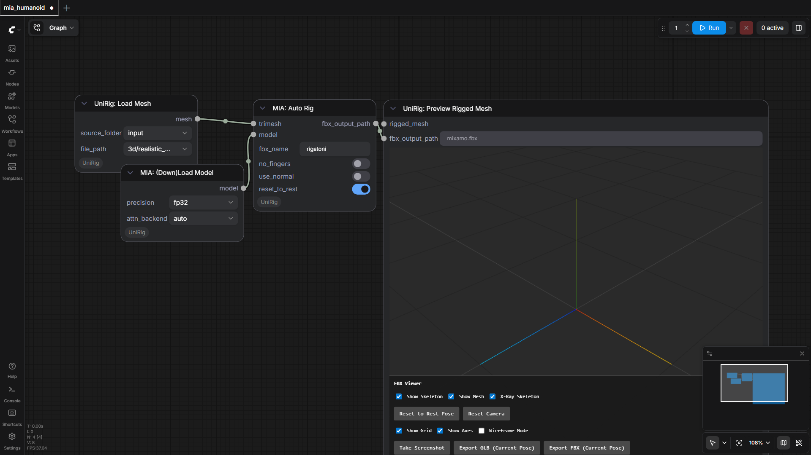
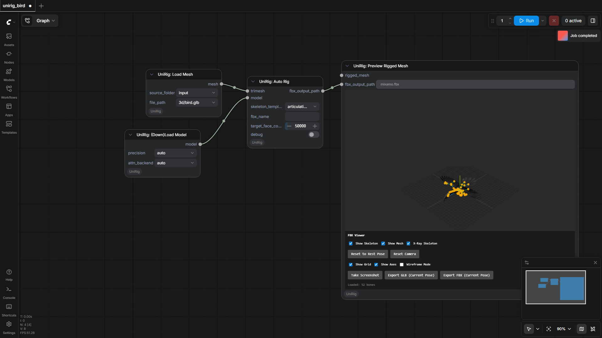
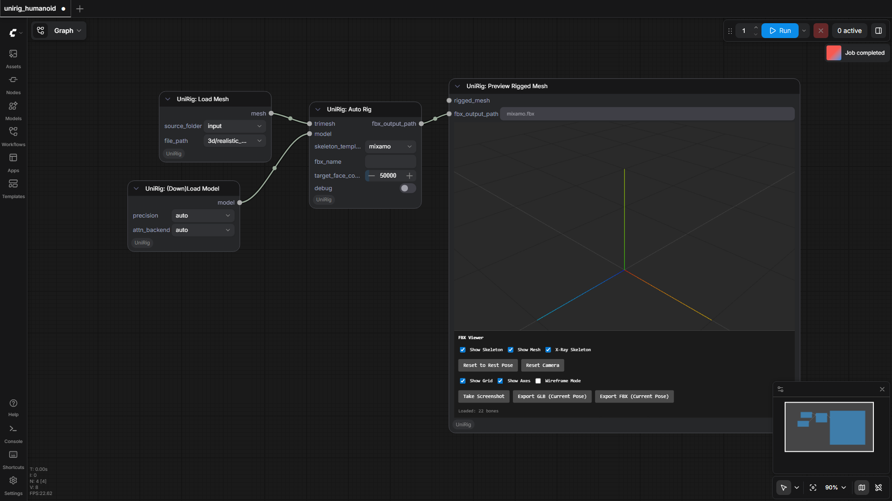

PozzettiAndrea/ComfyUI-UniRig
Test Results
2026-05-15 12:56 UTC
Test run
Windows-11-10.0.26200-SP0
Intel64 Family 6 Model 79 Stepping 1, GenuineIntel
100.0%
3 passed
3/3 tests
Workflows
Grid
List

mia_humanoid
pass
108.76s

unirig_bird
pass
124.35s

unirig_humanoid
pass
86.84s
Downloaded Models
11 files · 4.9 GB
models/mia/
2.2 GB
pose.pth
501.5 MB
joints.pth
501.5 MB
bw_normal.pth
409.1 MB
joints_coarse.pth
405.0 MB
bw.pth
405.0 MB
models/unirig/
2.7 GB
skin.safetensors
1.4 GB
skeleton.safetensors
1.3 GB
.cache\huggingface\CACHEDIR.TAG
195.0 B
.cache\huggingface\download\skeleton.safetensors.metadata
128.0 B
.cache\huggingface\download\skin.safetensors.metadata
127.0 B
.cache\huggingface\.gitignore
1.0 B
×
‹
›
0.0s / 0.0s
Resource Usage
RAM (GB)
VRAM (GB)